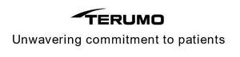

Trade Mark Journal No.2026/007 13 February 2026
UK00004325260 16 January 2026 (10,44)

- Class 10
- Surgical, medical, dental and veterinary apparatus and instruments; artificial limbs, eyes and teeth; orthopaedic articles; suture materials; therapeutic and assistive devices adapted for persons with disabilities; massage apparatus; apparatus, devices and articles for nursing infants; sexual activity apparatus, devices and articles; abdominal belts; abdominal corsets; abdominal pads; acupressure bands; acupuncture needles; air beds for medical purposes; air cushions for medical purposes; air mattresses for medical purposes; air pillows for medical purposes; ambulance stretchers; anaesthetic apparatus; anaesthetic masks; analysers for bacterial identification for medical purposes; anti-nausea wristbands; anti-rheumatism bracelets; anti-rheumatism rings; apparatus and installations for the production of X-rays, for medical purposes; apparatus for acne treatment; apparatus for administering inhalants for medical purposes; apparatus for artificial respiration; apparatus for DNA and RNA testing for medical purposes; apparatus for testing breast milk for medical purposes; apparatus for the regeneration of stem cells for medical purposes; apparatus for the treatment of deafness; appliances for washing body cavities; arch supports for footwear; armchairs for medical or dental purposes; artificial breasts; artificial eyes; artificial jaws; artificial limbs; artificial skin for surgical purposes; artificial teeth; athletic tapes; audiometers; baby feeding dummies; balling guns; basins for medical purposes; bath boards adapted for persons with physical disabilities; bed pans; bed vibrators; beds specially made for medical purposes; belts for medical purposes; belts, electric, for medical purposes; biodegradable bone fixation implants; biomagnetic rings for therapeutic or medical purposes; blankets, electric, for medical purposes; blood testing apparatus; body composition monitors; body fat monitors; body rehabilitation apparatus for medical purposes; bone void fillers comprised of artificial materials; boots for medical purposes; bracelets for medical purposes; brain pacemakers; breast pumps; breathing apparatus for medical purposes; brushes for cleaning body cavities; cannulae; capillary tubes for medical use; cases fitted for medical instruments; castrating pincers; catgut; catheters; chambers for inhalers; childbirth mattresses; cholesterol meters; clips for dummies; clips, surgical; clothing especially for operating rooms; commode chairs; compression garments; compressors [surgical]; condoms; containers especially made for medical waste; contraceptive implants; contraceptives, non-chemical; cooling pads for first aid purposes; cooling patches for medical purposes; corn knives; corsets for medical purposes; crutches; cryogenic apparatus for medical purposes; cryogenic apparatus for veterinary purposes; crystals for therapeutic purposes; cupping glasses; curing lamps for medical purposes; cushions for medical purposes; defibrillators; densitometers for medical purposes; dental apparatus and instruments; dental apparatus, electric; dental burs; dentists' armchairs; dentures; diabetic monitoring apparatus; diagnostic apparatus for medical purposes; diagnostic apparatus for medical purposes used in medical laboratories; dialyzers; disposable steam-heated masks for therapeutic purposes; disposable steam-heated patches for therapeutic purposes; dosage dispensers for medical use; douche bags; drainage tubes for medical purposes; draw-sheets for sick beds; dropper bottles for medical purposes; droppers for medical purposes; drug-coated stents for thrombosis; dummies for babies; ear picks; ear plugs [hearing protection devices]; ear plugs for swimmers; ear trumpets; elastic bandages, not for dressings; elastic stockings for surgical purposes; electric acupuncture instruments; electric facial aesthetic treatment apparatus, other than facial steamers; electric massage guns; electrocardiographs; electrodes for medical use; electrolarynxes; endoscopy cameras for medical purposes; enema apparatus for medical purposes; esthetic massage apparatus; feeding bottle teats; feeding bottle valves; feeding bottles; filters for respiratory masks for medical purposes; filters for ultraviolet rays, for medical purposes; fingerstalls for medical purposes; forceps; furniture especially made for medical purposes; galvanic belts for medical purposes; galvanic therapeutic appliances; gastroscopes; gloves for massage; gloves for medical purposes; glucometers; gum massagers for babies; haemocytometers; hair prostheses; haptic suits for medical purposes; hearing aids; hearing protectors; heart pacemakers; heart rate monitoring apparatus; heating cushions, electric, for medical purposes; hospital beds; hot air therapeutic apparatus; hot air vibrators for medical purposes; hydrogen inhalers; hypodermic syringes; hypogastric belts; ice bags for medical purposes; implantable subcutaneous drug delivery devices; incontinence sheets; incubators for babies; incubators for medical purposes; inhalers; injectors for medical purposes; instrument cases for use by doctors; insufflators; intrauterine devices; isolation booths fitted with medical equipment; keratometers; kinesiology tapes; knee bandages, orthopaedic; knives for surgical purposes; lamps for medical purposes; lancets; laser therapy helmets for treating alopecia; lasers for medical purposes; LED masks for therapeutic purposes; lenses [intraocular prostheses] for surgical implantation; lice combs; love dolls [sex dolls]; magnetic resonance imaging [MRI] apparatus for medical purposes; masks for use by medical personnel; massage chairs with built-in massage apparatus; maternity belts; medical apparatus and instruments; medical cooling apparatus for treating heatstroke; medical cooling apparatus for use in therapeutic hypothermia; medical examination tables; medical guidewires; menstrual cups; microdermabrasion apparatus for medical or therapeutic purposes; mirrors for dentists; mirrors for surgeons; nanorobots for medical purposes; nasal aspirators; nebulisers for medical purposes; needles for medical purposes; neural helmets for medical purposes; nipple shields for breastfeeding; obstetric apparatus; obstetric apparatus for cattle; operating tables; ophthalmoscopes; orthodontic appliances; orthodontic rubber bands; orthopaedic bandages for joints; orthopaedic belts; orthopaedic footwear; orthopaedic soles; oxygen concentrators for medical purposes; pads for preventing pressure sores on patient bodies; patient examination gowns; patient hoists; pessaries; pet walking aids; physical exercise apparatus for medical purposes; physiotherapy apparatus; pill crushers; pill cutters; pins for artificial teeth; plaster bandages for orthopaedic purposes; portable earpicks with endoscopy function; portable hand-held urinals; probes for medical purposes; protection devices against X-rays, for medical purposes; protective masks for medical purposes; pulse meters; pumps for medical purposes; quad canes for medical purposes; quartz lamps for medical purposes; radiological apparatus for medical purposes; radiology screens for medical purposes; radiotherapy apparatus; radium tubes for medical purposes; receptacles for applying medicines; respirators for artificial respiration; respirators for filtering air for medical purposes; respiratory masks for artificial respiration; respiratory masks for medical purposes; resuscitation apparatus; reusable sanitary masks made of gauze; robotic exoskeleton suits for medical purposes; sanitary masks; saws for surgical purposes; scalpels; scissors for surgery; sex toys; slings [support bandages]; soporific pillows for insomnia; sphygmotensiometers; spirometers [medical apparatus]; spittoons for medical purposes; splints, surgical; spoons for administering medicine; spoons for patients with tremor; stents; sterile sheets, surgical; stethoscopes; stockings for varices; strait jackets; stretchers, wheeled; support bandages; supports for flat feet; surgical apparatus and instruments; surgical bougies; surgical cutlery; surgical drapes; surgical implants comprised of artificial materials; surgical robots; surgical sponges; suspensory bandages; suture needles; syringes for injections; syringes for medical purposes; teeth protectors for dental purposes; teething rings; temperature indicator labels for medical purposes; testing apparatus for medical purposes; therapeutic facial masks; therapeutic magnets; thermal packs for first aid purposes; thermo-electric compresses [surgery]; thermometers for medical purposes; thread, surgical; tips for crutches; toe separators for orthopaedic purposes; tomographs for medical purposes; tongue depressors for medical purposes; traction apparatus for medical purposes; trocars; trusses; ultrasonic imaging apparatus for medical purposes; ultraviolet ray lamps for medical purposes; umbilical belts; urethral probes; urethral syringes; urinals being vessels; urological apparatus and instruments; uterine syringes; vaginal syringes; vaporizers for medical purposes; veterinary apparatus and instruments; vibromassage apparatus; walking frames for persons with disabilities; walking sticks for medical purposes; water bags for medical purposes; waterbeds for medical purposes; wheeled walkers to aid mobility; X-ray apparatus for medical purposes; X-ray photographs for medical purposes; X-ray tubes for medical purposes.
- Class 44
- Medical services; medical information services; healthcare services; providing medical information to medical professionals in the fields of vascular and heart surgery and procedures, cardiology, laparoscopic surgery and procedures, diabetes, infusion, transfusion, blood collection and handling, patient and vital sign monitoring, artificial organ support; providing medical information; veterinary services; hygienic and beauty care for human beings or animals.
TERUMO KABUSHIKI KAISHA (TERUMO CORPORATION)
Representative: HGF Limited